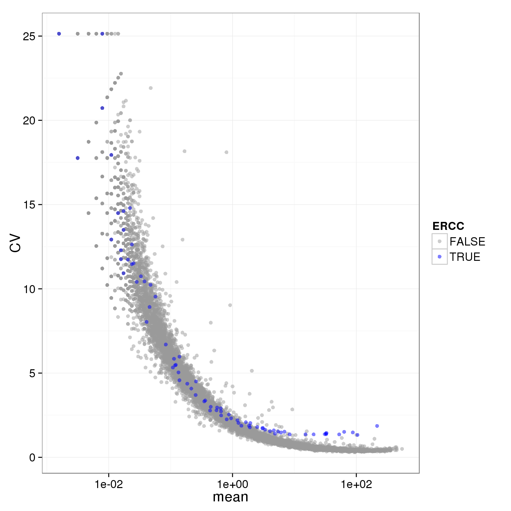

identification of noisy genes
Po-Yuan Tung
2015-06-03
Last updated: 2015-06-05
Code version: e584fdea5b3086a556ecebcc0800141cd513b060
Input
library("dplyr")
library("ggplot2")
theme_set(theme_bw(base_size = 16))
library("edgeR")Summary counts from featureCounts. Created with gather-summary-counts.py.
summary_counts <- read.table("../data/summary-counts.txt", header = TRUE,
stringsAsFactors = FALSE)Using only the sickle-trimmed data, sum the counts across all the sequencing lanes for a given sample.
summary_per_sample <- summary_counts %>%
filter(sickle == "quality-trimmed") %>%
select(-index, -lane, -flow_cell, -sickle) %>%
group_by(individual, batch, well, rmdup) %>%
summarise_each(funs(sum)) %>%
ungroup %>%
as.data.frameInput annotation.
anno <- read.table("../data/annotation.txt", header = TRUE,
stringsAsFactors = FALSE)
head(anno) individual batch well sample_id
1 19098 1 A01 NA19098.1.A01
2 19098 1 A02 NA19098.1.A02
3 19098 1 A03 NA19098.1.A03
4 19098 1 A04 NA19098.1.A04
5 19098 1 A05 NA19098.1.A05
6 19098 1 A06 NA19098.1.A06Input read counts.
reads <- read.table("../data/reads.txt", header = TRUE,
stringsAsFactors = FALSE)Input molecule counts.
molecules <- read.table("../data/molecules.txt", header = TRUE,
stringsAsFactors = FALSE)Input single cell observational quality control data.
qc <- read.table("../data/qc-ipsc.txt", header = TRUE,
stringsAsFactors = FALSE)
head(qc) individual batch well cell_number concentration tra1.60
1 19098 1 A01 1 1.734785 1
2 19098 1 A02 1 1.723038 1
3 19098 1 A03 1 1.512786 1
4 19098 1 A04 1 1.347492 1
5 19098 1 A05 1 2.313047 1
6 19098 1 A06 1 2.056803 1Remove bad quality cells
Remove cells with total reads < 2 millons
#reads per sample
summary_per_sample_reads <- summary_per_sample %>% filter(rmdup == "reads")
#create unmapped ratios
summary_per_sample_reads$unmapped.ratios <- summary_per_sample_reads[,9]/apply(summary_per_sample_reads[,5:13],1,sum)
#create total mapped reads
summary_per_sample_reads$total.mapped <- apply(summary_per_sample_reads[,5:8],1,sum)
#creat ERCC ratios
summary_per_sample_reads$ERCC.ratios <- apply(reads[grep("ERCC", rownames(reads)), ],2,sum)/apply(summary_per_sample_reads[,5:8],1,sum)
#remove bulk keep single cell
summary_per_sample_reads_single <- summary_per_sample_reads[summary_per_sample_reads$well!="bulk",]
#add cell number per well by merging qc file
summary_per_sample_reads_single_qc <- merge(summary_per_sample_reads_single,qc,by=c("individual","batch","well"))
#qc filter
summary_per_sample_reads_single_qc$qc_filter <- summary_per_sample_reads_single_qc$cell_number == 1 & summary_per_sample_reads_single_qc$total.mapped > 2 * 10^6
sum(summary_per_sample_reads_single_qc$qc_filter)[1] 632ggplot(summary_per_sample_reads_single_qc, aes(x = total.mapped , y = unmapped.ratios, col = qc_filter)) + geom_text(aes(label = cell_number))
ggplot(summary_per_sample_reads_single_qc, aes(x = total.mapped , y = ERCC.ratios, col = qc_filter)) + geom_text(aes(label = cell_number))
Total molecule number of ERCC
# molecules per sample
summary_per_sample_molecules <- summary_per_sample %>% filter(rmdup == "molecules")
# total ERCC molecule
summary_per_sample_molecules$total.ERCC.mol <- apply(molecules[grep("ERCC", rownames(reads)), ],2,sum)
# ERCC molecule ratio
summary_per_sample_molecules$ERCC.ratio.mol <- summary_per_sample_molecules$total.ERCC.mol/summary_per_sample_molecules$Assigned
# remove bulk keep single cell
summary_per_sample_molecules_single <- summary_per_sample_molecules[summary_per_sample_molecules$well!="bulk",]
plot(summary_per_sample_molecules_single$total.ERCC.mol)
# adjust total ERCC molecules of 19098 batch2
summary_per_sample_molecules_single$index_19098_2 <- (summary_per_sample_molecules_single$individual == "19098" & summary_per_sample_molecules_single$batch == "2")
# calculating the ratio of 19098 batch 2 to the rest
adjusted_ratio.mol <- mean(summary_per_sample_molecules_single$total.ERCC.mol[summary_per_sample_molecules_single$index_19098_2])/mean(summary_per_sample_molecules_single$total.ERCC[!summary_per_sample_molecules_single$index_19098_2])
adjusted_ratio.mol [1] 7.615798# adjusted total ERCC reads
summary_per_sample_molecules_single$adj.total.ERCC.mol <- summary_per_sample_molecules_single$total.ERCC.mol
summary_per_sample_molecules_single$adj.total.ERCC.mol[summary_per_sample_molecules_single$index_19098_2] <- summary_per_sample_molecules_single$adj.total.ERCC.mol[summary_per_sample_molecules_single$index_19098_2]/adjusted_ratio.mol
# adjusted ERCC ratios
summary_per_sample_molecules_single$adj.ERCC.ratios.mol <-
summary_per_sample_molecules_single$adj.total.ERCC.mol/summary_per_sample_molecules_single$Assigned
# add qc filter and cell number
summary_per_sample_molecules_single$qc_filter <- summary_per_sample_reads_single_qc$qc_filter
summary_per_sample_molecules_single$cell_number <- summary_per_sample_reads_single_qc$cell_number
ggplot(summary_per_sample_molecules_single, aes(x = Assigned, y = ERCC.ratio.mol, col = qc_filter)) + geom_text(aes(label = cell_number)) + facet_grid(individual ~ batch) + theme(axis.text.x = element_text(angle = 90, hjust = 0.9, vjust = 0.5))
ggplot(summary_per_sample_molecules_single, aes(x = Assigned, y = adj.ERCC.ratios.mol, col = qc_filter)) + geom_text(aes(label = cell_number)) + facet_grid(individual ~ batch) + theme(axis.text.x = element_text(angle = 90, hjust = 0.9, vjust = 0.5))
CV and mean
Looking at molecule
#correct for collision probability
molecules.crt <- -1024*log(1-molecules/1024)Warning in lapply(X = x, FUN = .Generic, ...): NaNs producedWarning in lapply(X = x, FUN = .Generic, ...): NaNs producedWarning in lapply(X = x, FUN = .Generic, ...): NaNs producedWarning in lapply(X = x, FUN = .Generic, ...): NaNs producedWarning in lapply(X = x, FUN = .Generic, ...): NaNs producedWarning in lapply(X = x, FUN = .Generic, ...): NaNs producedWarning in lapply(X = x, FUN = .Generic, ...): NaNs producedWarning in lapply(X = x, FUN = .Generic, ...): NaNs producedWarning in lapply(X = x, FUN = .Generic, ...): NaNs producedWarning in lapply(X = x, FUN = .Generic, ...): NaNs producedWarning in lapply(X = x, FUN = .Generic, ...): NaNs producedWarning in lapply(X = x, FUN = .Generic, ...): NaNs producedWarning in lapply(X = x, FUN = .Generic, ...): NaNs producedWarning in lapply(X = x, FUN = .Generic, ...): NaNs producedWarning in lapply(X = x, FUN = .Generic, ...): NaNs producedWarning in lapply(X = x, FUN = .Generic, ...): NaNs producedWarning in lapply(X = x, FUN = .Generic, ...): NaNs producedWarning in lapply(X = x, FUN = .Generic, ...): NaNs producedWarning in lapply(X = x, FUN = .Generic, ...): NaNs producedWarning in lapply(X = x, FUN = .Generic, ...): NaNs producedWarning in lapply(X = x, FUN = .Generic, ...): NaNs producedWarning in lapply(X = x, FUN = .Generic, ...): NaNs producedWarning in lapply(X = x, FUN = .Generic, ...): NaNs producedWarning in lapply(X = x, FUN = .Generic, ...): NaNs producedWarning in lapply(X = x, FUN = .Generic, ...): NaNs producedWarning in lapply(X = x, FUN = .Generic, ...): NaNs producedWarning in lapply(X = x, FUN = .Generic, ...): NaNs producedWarning in lapply(X = x, FUN = .Generic, ...): NaNs producedWarning in lapply(X = x, FUN = .Generic, ...): NaNs producedWarning in lapply(X = x, FUN = .Generic, ...): NaNs producedWarning in lapply(X = x, FUN = .Generic, ...): NaNs producedWarning in lapply(X = x, FUN = .Generic, ...): NaNs producedWarning in lapply(X = x, FUN = .Generic, ...): NaNs producedWarning in lapply(X = x, FUN = .Generic, ...): NaNs producedWarning in lapply(X = x, FUN = .Generic, ...): NaNs producedWarning in lapply(X = x, FUN = .Generic, ...): NaNs producedWarning in lapply(X = x, FUN = .Generic, ...): NaNs producedWarning in lapply(X = x, FUN = .Generic, ...): NaNs producedWarning in lapply(X = x, FUN = .Generic, ...): NaNs producedWarning in lapply(X = x, FUN = .Generic, ...): NaNs producedWarning in lapply(X = x, FUN = .Generic, ...): NaNs producedWarning in lapply(X = x, FUN = .Generic, ...): NaNs producedWarning in lapply(X = x, FUN = .Generic, ...): NaNs producedWarning in lapply(X = x, FUN = .Generic, ...): NaNs producedWarning in lapply(X = x, FUN = .Generic, ...): NaNs producedWarning in lapply(X = x, FUN = .Generic, ...): NaNs producedWarning in lapply(X = x, FUN = .Generic, ...): NaNs producedWarning in lapply(X = x, FUN = .Generic, ...): NaNs producedWarning in lapply(X = x, FUN = .Generic, ...): NaNs producedWarning in lapply(X = x, FUN = .Generic, ...): NaNs producedWarning in lapply(X = x, FUN = .Generic, ...): NaNs producedWarning in lapply(X = x, FUN = .Generic, ...): NaNs producedWarning in lapply(X = x, FUN = .Generic, ...): NaNs producedWarning in lapply(X = x, FUN = .Generic, ...): NaNs producedWarning in lapply(X = x, FUN = .Generic, ...): NaNs producedWarning in lapply(X = x, FUN = .Generic, ...): NaNs producedWarning in lapply(X = x, FUN = .Generic, ...): NaNs producedWarning in lapply(X = x, FUN = .Generic, ...): NaNs producedWarning in lapply(X = x, FUN = .Generic, ...): NaNs producedWarning in lapply(X = x, FUN = .Generic, ...): NaNs producedWarning in lapply(X = x, FUN = .Generic, ...): NaNs producedWarning in lapply(X = x, FUN = .Generic, ...): NaNs producedWarning in lapply(X = x, FUN = .Generic, ...): NaNs producedWarning in lapply(X = x, FUN = .Generic, ...): NaNs producedWarning in lapply(X = x, FUN = .Generic, ...): NaNs producedWarning in lapply(X = x, FUN = .Generic, ...): NaNs producedWarning in lapply(X = x, FUN = .Generic, ...): NaNs producedWarning in lapply(X = x, FUN = .Generic, ...): NaNs producedWarning in lapply(X = x, FUN = .Generic, ...): NaNs producedWarning in lapply(X = x, FUN = .Generic, ...): NaNs producedWarning in lapply(X = x, FUN = .Generic, ...): NaNs producedWarning in lapply(X = x, FUN = .Generic, ...): NaNs producedWarning in lapply(X = x, FUN = .Generic, ...): NaNs producedWarning in lapply(X = x, FUN = .Generic, ...): NaNs producedWarning in lapply(X = x, FUN = .Generic, ...): NaNs producedWarning in lapply(X = x, FUN = .Generic, ...): NaNs producedWarning in lapply(X = x, FUN = .Generic, ...): NaNs producedWarning in lapply(X = x, FUN = .Generic, ...): NaNs producedWarning in lapply(X = x, FUN = .Generic, ...): NaNs producedWarning in lapply(X = x, FUN = .Generic, ...): NaNs producedWarning in lapply(X = x, FUN = .Generic, ...): NaNs producedWarning in lapply(X = x, FUN = .Generic, ...): NaNs producedWarning in lapply(X = x, FUN = .Generic, ...): NaNs producedWarning in lapply(X = x, FUN = .Generic, ...): NaNs producedWarning in lapply(X = x, FUN = .Generic, ...): NaNs producedWarning in lapply(X = x, FUN = .Generic, ...): NaNs producedWarning in lapply(X = x, FUN = .Generic, ...): NaNs producedWarning in lapply(X = x, FUN = .Generic, ...): NaNs producedWarning in lapply(X = x, FUN = .Generic, ...): NaNs producedWarning in lapply(X = x, FUN = .Generic, ...): NaNs producedWarning in lapply(X = x, FUN = .Generic, ...): NaNs producedWarning in lapply(X = x, FUN = .Generic, ...): NaNs producedWarning in lapply(X = x, FUN = .Generic, ...): NaNs producedWarning in lapply(X = x, FUN = .Generic, ...): NaNs producedWarning in lapply(X = x, FUN = .Generic, ...): NaNs producedWarning in lapply(X = x, FUN = .Generic, ...): NaNs producedWarning in lapply(X = x, FUN = .Generic, ...): NaNs producedWarning in lapply(X = x, FUN = .Generic, ...): NaNs producedWarning in lapply(X = x, FUN = .Generic, ...): NaNs producedWarning in lapply(X = x, FUN = .Generic, ...): NaNs producedWarning in lapply(X = x, FUN = .Generic, ...): NaNs producedWarning in lapply(X = x, FUN = .Generic, ...): NaNs producedWarning in lapply(X = x, FUN = .Generic, ...): NaNs producedWarning in lapply(X = x, FUN = .Generic, ...): NaNs producedWarning in lapply(X = x, FUN = .Generic, ...): NaNs producedWarning in lapply(X = x, FUN = .Generic, ...): NaNs producedWarning in lapply(X = x, FUN = .Generic, ...): NaNs producedWarning in lapply(X = x, FUN = .Generic, ...): NaNs producedWarning in lapply(X = x, FUN = .Generic, ...): NaNs producedWarning in lapply(X = x, FUN = .Generic, ...): NaNs producedWarning in lapply(X = x, FUN = .Generic, ...): NaNs producedWarning in lapply(X = x, FUN = .Generic, ...): NaNs producedWarning in lapply(X = x, FUN = .Generic, ...): NaNs producedWarning in lapply(X = x, FUN = .Generic, ...): NaNs producedWarning in lapply(X = x, FUN = .Generic, ...): NaNs producedWarning in lapply(X = x, FUN = .Generic, ...): NaNs producedWarning in lapply(X = x, FUN = .Generic, ...): NaNs producedWarning in lapply(X = x, FUN = .Generic, ...): NaNs producedWarning in lapply(X = x, FUN = .Generic, ...): NaNs producedWarning in lapply(X = x, FUN = .Generic, ...): NaNs producedWarning in lapply(X = x, FUN = .Generic, ...): NaNs producedWarning in lapply(X = x, FUN = .Generic, ...): NaNs producedWarning in lapply(X = x, FUN = .Generic, ...): NaNs producedWarning in lapply(X = x, FUN = .Generic, ...): NaNs producedWarning in lapply(X = x, FUN = .Generic, ...): NaNs producedWarning in lapply(X = x, FUN = .Generic, ...): NaNs producedWarning in lapply(X = x, FUN = .Generic, ...): NaNs producedWarning in lapply(X = x, FUN = .Generic, ...): NaNs producedWarning in lapply(X = x, FUN = .Generic, ...): NaNs producedWarning in lapply(X = x, FUN = .Generic, ...): NaNs producedWarning in lapply(X = x, FUN = .Generic, ...): NaNs producedWarning in lapply(X = x, FUN = .Generic, ...): NaNs producedWarning in lapply(X = x, FUN = .Generic, ...): NaNs producedWarning in lapply(X = x, FUN = .Generic, ...): NaNs producedWarning in lapply(X = x, FUN = .Generic, ...): NaNs producedWarning in lapply(X = x, FUN = .Generic, ...): NaNs producedWarning in lapply(X = x, FUN = .Generic, ...): NaNs producedWarning in lapply(X = x, FUN = .Generic, ...): NaNs producedWarning in lapply(X = x, FUN = .Generic, ...): NaNs producedWarning in lapply(X = x, FUN = .Generic, ...): NaNs producedWarning in lapply(X = x, FUN = .Generic, ...): NaNs producedWarning in lapply(X = x, FUN = .Generic, ...): NaNs producedWarning in lapply(X = x, FUN = .Generic, ...): NaNs producedWarning in lapply(X = x, FUN = .Generic, ...): NaNs producedWarning in lapply(X = x, FUN = .Generic, ...): NaNs producedWarning in lapply(X = x, FUN = .Generic, ...): NaNs producedWarning in lapply(X = x, FUN = .Generic, ...): NaNs producedWarning in lapply(X = x, FUN = .Generic, ...): NaNs producedWarning in lapply(X = x, FUN = .Generic, ...): NaNs producedWarning in lapply(X = x, FUN = .Generic, ...): NaNs producedWarning in lapply(X = x, FUN = .Generic, ...): NaNs producedWarning in lapply(X = x, FUN = .Generic, ...): NaNs producedWarning in lapply(X = x, FUN = .Generic, ...): NaNs producedWarning in lapply(X = x, FUN = .Generic, ...): NaNs producedWarning in lapply(X = x, FUN = .Generic, ...): NaNs producedWarning in lapply(X = x, FUN = .Generic, ...): NaNs producedWarning in lapply(X = x, FUN = .Generic, ...): NaNs producedWarning in lapply(X = x, FUN = .Generic, ...): NaNs producedWarning in lapply(X = x, FUN = .Generic, ...): NaNs producedWarning in lapply(X = x, FUN = .Generic, ...): NaNs producedWarning in lapply(X = x, FUN = .Generic, ...): NaNs producedWarning in lapply(X = x, FUN = .Generic, ...): NaNs producedWarning in lapply(X = x, FUN = .Generic, ...): NaNs producedWarning in lapply(X = x, FUN = .Generic, ...): NaNs producedWarning in lapply(X = x, FUN = .Generic, ...): NaNs producedWarning in lapply(X = x, FUN = .Generic, ...): NaNs producedWarning in lapply(X = x, FUN = .Generic, ...): NaNs producedWarning in lapply(X = x, FUN = .Generic, ...): NaNs producedWarning in lapply(X = x, FUN = .Generic, ...): NaNs producedWarning in lapply(X = x, FUN = .Generic, ...): NaNs producedWarning in lapply(X = x, FUN = .Generic, ...): NaNs producedWarning in lapply(X = x, FUN = .Generic, ...): NaNs producedWarning in lapply(X = x, FUN = .Generic, ...): NaNs producedWarning in lapply(X = x, FUN = .Generic, ...): NaNs producedWarning in lapply(X = x, FUN = .Generic, ...): NaNs producedWarning in lapply(X = x, FUN = .Generic, ...): NaNs producedWarning in lapply(X = x, FUN = .Generic, ...): NaNs producedWarning in lapply(X = x, FUN = .Generic, ...): NaNs producedWarning in lapply(X = x, FUN = .Generic, ...): NaNs producedWarning in lapply(X = x, FUN = .Generic, ...): NaNs producedWarning in lapply(X = x, FUN = .Generic, ...): NaNs producedWarning in lapply(X = x, FUN = .Generic, ...): NaNs producedWarning in lapply(X = x, FUN = .Generic, ...): NaNs producedWarning in lapply(X = x, FUN = .Generic, ...): NaNs producedWarning in lapply(X = x, FUN = .Generic, ...): NaNs producedWarning in lapply(X = x, FUN = .Generic, ...): NaNs producedWarning in lapply(X = x, FUN = .Generic, ...): NaNs producedWarning in lapply(X = x, FUN = .Generic, ...): NaNs producedWarning in lapply(X = x, FUN = .Generic, ...): NaNs producedWarning in lapply(X = x, FUN = .Generic, ...): NaNs producedWarning in lapply(X = x, FUN = .Generic, ...): NaNs producedWarning in lapply(X = x, FUN = .Generic, ...): NaNs producedWarning in lapply(X = x, FUN = .Generic, ...): NaNs producedWarning in lapply(X = x, FUN = .Generic, ...): NaNs producedWarning in lapply(X = x, FUN = .Generic, ...): NaNs producedWarning in lapply(X = x, FUN = .Generic, ...): NaNs producedWarning in lapply(X = x, FUN = .Generic, ...): NaNs producedWarning in lapply(X = x, FUN = .Generic, ...): NaNs producedWarning in lapply(X = x, FUN = .Generic, ...): NaNs producedWarning in lapply(X = x, FUN = .Generic, ...): NaNs producedWarning in lapply(X = x, FUN = .Generic, ...): NaNs producedWarning in lapply(X = x, FUN = .Generic, ...): NaNs producedWarning in lapply(X = x, FUN = .Generic, ...): NaNs producedWarning in lapply(X = x, FUN = .Generic, ...): NaNs producedWarning in lapply(X = x, FUN = .Generic, ...): NaNs producedWarning in lapply(X = x, FUN = .Generic, ...): NaNs producedWarning in lapply(X = x, FUN = .Generic, ...): NaNs producedWarning in lapply(X = x, FUN = .Generic, ...): NaNs producedWarning in lapply(X = x, FUN = .Generic, ...): NaNs producedWarning in lapply(X = x, FUN = .Generic, ...): NaNs producedWarning in lapply(X = x, FUN = .Generic, ...): NaNs producedWarning in lapply(X = x, FUN = .Generic, ...): NaNs producedWarning in lapply(X = x, FUN = .Generic, ...): NaNs producedWarning in lapply(X = x, FUN = .Generic, ...): NaNs producedWarning in lapply(X = x, FUN = .Generic, ...): NaNs producedWarning in lapply(X = x, FUN = .Generic, ...): NaNs producedWarning in lapply(X = x, FUN = .Generic, ...): NaNs producedWarning in lapply(X = x, FUN = .Generic, ...): NaNs producedWarning in lapply(X = x, FUN = .Generic, ...): NaNs producedWarning in lapply(X = x, FUN = .Generic, ...): NaNs producedWarning in lapply(X = x, FUN = .Generic, ...): NaNs producedWarning in lapply(X = x, FUN = .Generic, ...): NaNs producedWarning in lapply(X = x, FUN = .Generic, ...): NaNs producedWarning in lapply(X = x, FUN = .Generic, ...): NaNs producedWarning in lapply(X = x, FUN = .Generic, ...): NaNs producedWarning in lapply(X = x, FUN = .Generic, ...): NaNs producedWarning in lapply(X = x, FUN = .Generic, ...): NaNs producedWarning in lapply(X = x, FUN = .Generic, ...): NaNs producedWarning in lapply(X = x, FUN = .Generic, ...): NaNs producedWarning in lapply(X = x, FUN = .Generic, ...): NaNs producedWarning in lapply(X = x, FUN = .Generic, ...): NaNs producedWarning in lapply(X = x, FUN = .Generic, ...): NaNs producedWarning in lapply(X = x, FUN = .Generic, ...): NaNs producedWarning in lapply(X = x, FUN = .Generic, ...): NaNs producedWarning in lapply(X = x, FUN = .Generic, ...): NaNs producedWarning in lapply(X = x, FUN = .Generic, ...): NaNs producedWarning in lapply(X = x, FUN = .Generic, ...): NaNs producedWarning in lapply(X = x, FUN = .Generic, ...): NaNs producedWarning in lapply(X = x, FUN = .Generic, ...): NaNs producedWarning in lapply(X = x, FUN = .Generic, ...): NaNs producedWarning in lapply(X = x, FUN = .Generic, ...): NaNs producedWarning in lapply(X = x, FUN = .Generic, ...): NaNs producedWarning in lapply(X = x, FUN = .Generic, ...): NaNs producedWarning in lapply(X = x, FUN = .Generic, ...): NaNs producedWarning in lapply(X = x, FUN = .Generic, ...): NaNs producedWarning in lapply(X = x, FUN = .Generic, ...): NaNs producedWarning in lapply(X = x, FUN = .Generic, ...): NaNs producedWarning in lapply(X = x, FUN = .Generic, ...): NaNs producedWarning in lapply(X = x, FUN = .Generic, ...): NaNs producedWarning in lapply(X = x, FUN = .Generic, ...): NaNs producedWarning in lapply(X = x, FUN = .Generic, ...): NaNs producedWarning in lapply(X = x, FUN = .Generic, ...): NaNs producedWarning in lapply(X = x, FUN = .Generic, ...): NaNs producedWarning in lapply(X = x, FUN = .Generic, ...): NaNs producedWarning in lapply(X = x, FUN = .Generic, ...): NaNs producedWarning in lapply(X = x, FUN = .Generic, ...): NaNs producedWarning in lapply(X = x, FUN = .Generic, ...): NaNs producedWarning in lapply(X = x, FUN = .Generic, ...): NaNs producedWarning in lapply(X = x, FUN = .Generic, ...): NaNs producedWarning in lapply(X = x, FUN = .Generic, ...): NaNs producedWarning in lapply(X = x, FUN = .Generic, ...): NaNs producedWarning in lapply(X = x, FUN = .Generic, ...): NaNs producedWarning in lapply(X = x, FUN = .Generic, ...): NaNs producedWarning in lapply(X = x, FUN = .Generic, ...): NaNs producedWarning in lapply(X = x, FUN = .Generic, ...): NaNs producedWarning in lapply(X = x, FUN = .Generic, ...): NaNs producedWarning in lapply(X = x, FUN = .Generic, ...): NaNs producedWarning in lapply(X = x, FUN = .Generic, ...): NaNs producedWarning in lapply(X = x, FUN = .Generic, ...): NaNs producedWarning in lapply(X = x, FUN = .Generic, ...): NaNs producedWarning in lapply(X = x, FUN = .Generic, ...): NaNs producedWarning in lapply(X = x, FUN = .Generic, ...): NaNs producedWarning in lapply(X = x, FUN = .Generic, ...): NaNs producedWarning in lapply(X = x, FUN = .Generic, ...): NaNs producedWarning in lapply(X = x, FUN = .Generic, ...): NaNs producedWarning in lapply(X = x, FUN = .Generic, ...): NaNs producedWarning in lapply(X = x, FUN = .Generic, ...): NaNs producedWarning in lapply(X = x, FUN = .Generic, ...): NaNs producedWarning in lapply(X = x, FUN = .Generic, ...): NaNs producedWarning in lapply(X = x, FUN = .Generic, ...): NaNs producedWarning in lapply(X = x, FUN = .Generic, ...): NaNs producedWarning in lapply(X = x, FUN = .Generic, ...): NaNs producedWarning in lapply(X = x, FUN = .Generic, ...): NaNs producedWarning in lapply(X = x, FUN = .Generic, ...): NaNs producedWarning in lapply(X = x, FUN = .Generic, ...): NaNs producedWarning in lapply(X = x, FUN = .Generic, ...): NaNs producedWarning in lapply(X = x, FUN = .Generic, ...): NaNs producedWarning in lapply(X = x, FUN = .Generic, ...): NaNs producedWarning in lapply(X = x, FUN = .Generic, ...): NaNs producedWarning in lapply(X = x, FUN = .Generic, ...): NaNs producedWarning in lapply(X = x, FUN = .Generic, ...): NaNs producedWarning in lapply(X = x, FUN = .Generic, ...): NaNs producedWarning in lapply(X = x, FUN = .Generic, ...): NaNs producedWarning in lapply(X = x, FUN = .Generic, ...): NaNs producedWarning in lapply(X = x, FUN = .Generic, ...): NaNs producedWarning in lapply(X = x, FUN = .Generic, ...): NaNs producedWarning in lapply(X = x, FUN = .Generic, ...): NaNs producedWarning in lapply(X = x, FUN = .Generic, ...): NaNs producedWarning in lapply(X = x, FUN = .Generic, ...): NaNs producedWarning in lapply(X = x, FUN = .Generic, ...): NaNs producedWarning in lapply(X = x, FUN = .Generic, ...): NaNs producedWarning in lapply(X = x, FUN = .Generic, ...): NaNs producedWarning in lapply(X = x, FUN = .Generic, ...): NaNs producedWarning in lapply(X = x, FUN = .Generic, ...): NaNs producedWarning in lapply(X = x, FUN = .Generic, ...): NaNs producedWarning in lapply(X = x, FUN = .Generic, ...): NaNs producedWarning in lapply(X = x, FUN = .Generic, ...): NaNs producedWarning in lapply(X = x, FUN = .Generic, ...): NaNs producedWarning in lapply(X = x, FUN = .Generic, ...): NaNs producedWarning in lapply(X = x, FUN = .Generic, ...): NaNs producedWarning in lapply(X = x, FUN = .Generic, ...): NaNs producedWarning in lapply(X = x, FUN = .Generic, ...): NaNs producedWarning in lapply(X = x, FUN = .Generic, ...): NaNs producedWarning in lapply(X = x, FUN = .Generic, ...): NaNs producedWarning in lapply(X = x, FUN = .Generic, ...): NaNs producedWarning in lapply(X = x, FUN = .Generic, ...): NaNs producedWarning in lapply(X = x, FUN = .Generic, ...): NaNs producedWarning in lapply(X = x, FUN = .Generic, ...): NaNs producedWarning in lapply(X = x, FUN = .Generic, ...): NaNs producedWarning in lapply(X = x, FUN = .Generic, ...): NaNs producedWarning in lapply(X = x, FUN = .Generic, ...): NaNs producedWarning in lapply(X = x, FUN = .Generic, ...): NaNs producedWarning in lapply(X = x, FUN = .Generic, ...): NaNs producedWarning in lapply(X = x, FUN = .Generic, ...): NaNs producedWarning in lapply(X = x, FUN = .Generic, ...): NaNs producedWarning in lapply(X = x, FUN = .Generic, ...): NaNs producedWarning in lapply(X = x, FUN = .Generic, ...): NaNs producedWarning in lapply(X = x, FUN = .Generic, ...): NaNs producedWarning in lapply(X = x, FUN = .Generic, ...): NaNs producedWarning in lapply(X = x, FUN = .Generic, ...): NaNs producedWarning in lapply(X = x, FUN = .Generic, ...): NaNs producedWarning in lapply(X = x, FUN = .Generic, ...): NaNs producedWarning in lapply(X = x, FUN = .Generic, ...): NaNs producedWarning in lapply(X = x, FUN = .Generic, ...): NaNs producedWarning in lapply(X = x, FUN = .Generic, ...): NaNs producedWarning in lapply(X = x, FUN = .Generic, ...): NaNs producedWarning in lapply(X = x, FUN = .Generic, ...): NaNs producedWarning in lapply(X = x, FUN = .Generic, ...): NaNs producedWarning in lapply(X = x, FUN = .Generic, ...): NaNs producedWarning in lapply(X = x, FUN = .Generic, ...): NaNs producedWarning in lapply(X = x, FUN = .Generic, ...): NaNs producedWarning in lapply(X = x, FUN = .Generic, ...): NaNs producedWarning in lapply(X = x, FUN = .Generic, ...): NaNs producedWarning in lapply(X = x, FUN = .Generic, ...): NaNs producedWarning in lapply(X = x, FUN = .Generic, ...): NaNs producedWarning in lapply(X = x, FUN = .Generic, ...): NaNs producedWarning in lapply(X = x, FUN = .Generic, ...): NaNs producedWarning in lapply(X = x, FUN = .Generic, ...): NaNs producedWarning in lapply(X = x, FUN = .Generic, ...): NaNs producedWarning in lapply(X = x, FUN = .Generic, ...): NaNs producedWarning in lapply(X = x, FUN = .Generic, ...): NaNs producedWarning in lapply(X = x, FUN = .Generic, ...): NaNs producedWarning in lapply(X = x, FUN = .Generic, ...): NaNs producedWarning in lapply(X = x, FUN = .Generic, ...): NaNs producedWarning in lapply(X = x, FUN = .Generic, ...): NaNs producedWarning in lapply(X = x, FUN = .Generic, ...): NaNs producedWarning in lapply(X = x, FUN = .Generic, ...): NaNs producedWarning in lapply(X = x, FUN = .Generic, ...): NaNs producedWarning in lapply(X = x, FUN = .Generic, ...): NaNs producedWarning in lapply(X = x, FUN = .Generic, ...): NaNs producedWarning in lapply(X = x, FUN = .Generic, ...): NaNs producedWarning in lapply(X = x, FUN = .Generic, ...): NaNs producedWarning in lapply(X = x, FUN = .Generic, ...): NaNs producedWarning in lapply(X = x, FUN = .Generic, ...): NaNs producedWarning in lapply(X = x, FUN = .Generic, ...): NaNs producedWarning in lapply(X = x, FUN = .Generic, ...): NaNs producedWarning in lapply(X = x, FUN = .Generic, ...): NaNs producedWarning in lapply(X = x, FUN = .Generic, ...): NaNs producedWarning in lapply(X = x, FUN = .Generic, ...): NaNs producedWarning in lapply(X = x, FUN = .Generic, ...): NaNs producedWarning in lapply(X = x, FUN = .Generic, ...): NaNs producedWarning in lapply(X = x, FUN = .Generic, ...): NaNs producedWarning in lapply(X = x, FUN = .Generic, ...): NaNs producedWarning in lapply(X = x, FUN = .Generic, ...): NaNs producedWarning in lapply(X = x, FUN = .Generic, ...): NaNs producedWarning in lapply(X = x, FUN = .Generic, ...): NaNs producedWarning in lapply(X = x, FUN = .Generic, ...): NaNs producedWarning in lapply(X = x, FUN = .Generic, ...): NaNs producedWarning in lapply(X = x, FUN = .Generic, ...): NaNs producedWarning in lapply(X = x, FUN = .Generic, ...): NaNs producedWarning in lapply(X = x, FUN = .Generic, ...): NaNs producedWarning in lapply(X = x, FUN = .Generic, ...): NaNs producedWarning in lapply(X = x, FUN = .Generic, ...): NaNs producedWarning in lapply(X = x, FUN = .Generic, ...): NaNs producedWarning in lapply(X = x, FUN = .Generic, ...): NaNs producedWarning in lapply(X = x, FUN = .Generic, ...): NaNs producedWarning in lapply(X = x, FUN = .Generic, ...): NaNs producedWarning in lapply(X = x, FUN = .Generic, ...): NaNs producedWarning in lapply(X = x, FUN = .Generic, ...): NaNs producedWarning in lapply(X = x, FUN = .Generic, ...): NaNs producedWarning in lapply(X = x, FUN = .Generic, ...): NaNs producedWarning in lapply(X = x, FUN = .Generic, ...): NaNs producedWarning in lapply(X = x, FUN = .Generic, ...): NaNs producedWarning in lapply(X = x, FUN = .Generic, ...): NaNs producedWarning in lapply(X = x, FUN = .Generic, ...): NaNs producedWarning in lapply(X = x, FUN = .Generic, ...): NaNs producedWarning in lapply(X = x, FUN = .Generic, ...): NaNs producedWarning in lapply(X = x, FUN = .Generic, ...): NaNs producedWarning in lapply(X = x, FUN = .Generic, ...): NaNs producedWarning in lapply(X = x, FUN = .Generic, ...): NaNs producedWarning in lapply(X = x, FUN = .Generic, ...): NaNs producedWarning in lapply(X = x, FUN = .Generic, ...): NaNs producedWarning in lapply(X = x, FUN = .Generic, ...): NaNs producedWarning in lapply(X = x, FUN = .Generic, ...): NaNs producedWarning in lapply(X = x, FUN = .Generic, ...): NaNs producedWarning in lapply(X = x, FUN = .Generic, ...): NaNs producedWarning in lapply(X = x, FUN = .Generic, ...): NaNs producedWarning in lapply(X = x, FUN = .Generic, ...): NaNs producedWarning in lapply(X = x, FUN = .Generic, ...): NaNs producedWarning in lapply(X = x, FUN = .Generic, ...): NaNs producedWarning in lapply(X = x, FUN = .Generic, ...): NaNs producedWarning in lapply(X = x, FUN = .Generic, ...): NaNs producedWarning in lapply(X = x, FUN = .Generic, ...): NaNs producedWarning in lapply(X = x, FUN = .Generic, ...): NaNs producedWarning in lapply(X = x, FUN = .Generic, ...): NaNs producedWarning in lapply(X = x, FUN = .Generic, ...): NaNs producedWarning in lapply(X = x, FUN = .Generic, ...): NaNs producedWarning in lapply(X = x, FUN = .Generic, ...): NaNs producedWarning in lapply(X = x, FUN = .Generic, ...): NaNs producedWarning in lapply(X = x, FUN = .Generic, ...): NaNs producedWarning in lapply(X = x, FUN = .Generic, ...): NaNs producedWarning in lapply(X = x, FUN = .Generic, ...): NaNs producedWarning in lapply(X = x, FUN = .Generic, ...): NaNs producedWarning in lapply(X = x, FUN = .Generic, ...): NaNs producedWarning in lapply(X = x, FUN = .Generic, ...): NaNs producedWarning in lapply(X = x, FUN = .Generic, ...): NaNs producedWarning in lapply(X = x, FUN = .Generic, ...): NaNs producedWarning in lapply(X = x, FUN = .Generic, ...): NaNs producedWarning in lapply(X = x, FUN = .Generic, ...): NaNs producedWarning in lapply(X = x, FUN = .Generic, ...): NaNs producedWarning in lapply(X = x, FUN = .Generic, ...): NaNs producedWarning in lapply(X = x, FUN = .Generic, ...): NaNs producedWarning in lapply(X = x, FUN = .Generic, ...): NaNs producedWarning in lapply(X = x, FUN = .Generic, ...): NaNs producedWarning in lapply(X = x, FUN = .Generic, ...): NaNs producedWarning in lapply(X = x, FUN = .Generic, ...): NaNs producedWarning in lapply(X = x, FUN = .Generic, ...): NaNs producedWarning in lapply(X = x, FUN = .Generic, ...): NaNs producedWarning in lapply(X = x, FUN = .Generic, ...): NaNs producedWarning in lapply(X = x, FUN = .Generic, ...): NaNs producedWarning in lapply(X = x, FUN = .Generic, ...): NaNs producedWarning in lapply(X = x, FUN = .Generic, ...): NaNs producedWarning in lapply(X = x, FUN = .Generic, ...): NaNs producedWarning in lapply(X = x, FUN = .Generic, ...): NaNs producedWarning in lapply(X = x, FUN = .Generic, ...): NaNs producedWarning in lapply(X = x, FUN = .Generic, ...): NaNs producedWarning in lapply(X = x, FUN = .Generic, ...): NaNs producedWarning in lapply(X = x, FUN = .Generic, ...): NaNs producedWarning in lapply(X = x, FUN = .Generic, ...): NaNs producedWarning in lapply(X = x, FUN = .Generic, ...): NaNs producedWarning in lapply(X = x, FUN = .Generic, ...): NaNs producedWarning in lapply(X = x, FUN = .Generic, ...): NaNs producedWarning in lapply(X = x, FUN = .Generic, ...): NaNs producedWarning in lapply(X = x, FUN = .Generic, ...): NaNs producedWarning in lapply(X = x, FUN = .Generic, ...): NaNs producedWarning in lapply(X = x, FUN = .Generic, ...): NaNs producedWarning in lapply(X = x, FUN = .Generic, ...): NaNs producedWarning in lapply(X = x, FUN = .Generic, ...): NaNs producedWarning in lapply(X = x, FUN = .Generic, ...): NaNs producedWarning in lapply(X = x, FUN = .Generic, ...): NaNs producedWarning in lapply(X = x, FUN = .Generic, ...): NaNs producedWarning in lapply(X = x, FUN = .Generic, ...): NaNs producedWarning in lapply(X = x, FUN = .Generic, ...): NaNs producedWarning in lapply(X = x, FUN = .Generic, ...): NaNs producedWarning in lapply(X = x, FUN = .Generic, ...): NaNs producedWarning in lapply(X = x, FUN = .Generic, ...): NaNs producedWarning in lapply(X = x, FUN = .Generic, ...): NaNs producedWarning in lapply(X = x, FUN = .Generic, ...): NaNs producedWarning in lapply(X = x, FUN = .Generic, ...): NaNs producedWarning in lapply(X = x, FUN = .Generic, ...): NaNs producedWarning in lapply(X = x, FUN = .Generic, ...): NaNs producedWarning in lapply(X = x, FUN = .Generic, ...): NaNs producedWarning in lapply(X = x, FUN = .Generic, ...): NaNs producedWarning in lapply(X = x, FUN = .Generic, ...): NaNs producedWarning in lapply(X = x, FUN = .Generic, ...): NaNs producedWarning in lapply(X = x, FUN = .Generic, ...): NaNs producedWarning in lapply(X = x, FUN = .Generic, ...): NaNs producedWarning in lapply(X = x, FUN = .Generic, ...): NaNs producedWarning in lapply(X = x, FUN = .Generic, ...): NaNs producedWarning in lapply(X = x, FUN = .Generic, ...): NaNs producedWarning in lapply(X = x, FUN = .Generic, ...): NaNs producedWarning in lapply(X = x, FUN = .Generic, ...): NaNs producedWarning in lapply(X = x, FUN = .Generic, ...): NaNs producedWarning in lapply(X = x, FUN = .Generic, ...): NaNs producedWarning in lapply(X = x, FUN = .Generic, ...): NaNs producedWarning in lapply(X = x, FUN = .Generic, ...): NaNs producedWarning in lapply(X = x, FUN = .Generic, ...): NaNs producedWarning in lapply(X = x, FUN = .Generic, ...): NaNs producedWarning in lapply(X = x, FUN = .Generic, ...): NaNs producedWarning in lapply(X = x, FUN = .Generic, ...): NaNs producedWarning in lapply(X = x, FUN = .Generic, ...): NaNs producedWarning in lapply(X = x, FUN = .Generic, ...): NaNs producedWarning in lapply(X = x, FUN = .Generic, ...): NaNs producedWarning in lapply(X = x, FUN = .Generic, ...): NaNs producedWarning in lapply(X = x, FUN = .Generic, ...): NaNs producedWarning in lapply(X = x, FUN = .Generic, ...): NaNs producedWarning in lapply(X = x, FUN = .Generic, ...): NaNs producedWarning in lapply(X = x, FUN = .Generic, ...): NaNs producedWarning in lapply(X = x, FUN = .Generic, ...): NaNs producedWarning in lapply(X = x, FUN = .Generic, ...): NaNs producedWarning in lapply(X = x, FUN = .Generic, ...): NaNs producedWarning in lapply(X = x, FUN = .Generic, ...): NaNs producedWarning in lapply(X = x, FUN = .Generic, ...): NaNs producedWarning in lapply(X = x, FUN = .Generic, ...): NaNs producedWarning in lapply(X = x, FUN = .Generic, ...): NaNs producedWarning in lapply(X = x, FUN = .Generic, ...): NaNs producedWarning in lapply(X = x, FUN = .Generic, ...): NaNs producedWarning in lapply(X = x, FUN = .Generic, ...): NaNs producedWarning in lapply(X = x, FUN = .Generic, ...): NaNs producedWarning in lapply(X = x, FUN = .Generic, ...): NaNs producedWarning in lapply(X = x, FUN = .Generic, ...): NaNs producedWarning in lapply(X = x, FUN = .Generic, ...): NaNs producedWarning in lapply(X = x, FUN = .Generic, ...): NaNs producedWarning in lapply(X = x, FUN = .Generic, ...): NaNs producedWarning in lapply(X = x, FUN = .Generic, ...): NaNs producedWarning in lapply(X = x, FUN = .Generic, ...): NaNs producedWarning in lapply(X = x, FUN = .Generic, ...): NaNs producedWarning in lapply(X = x, FUN = .Generic, ...): NaNs producedWarning in lapply(X = x, FUN = .Generic, ...): NaNs producedWarning in lapply(X = x, FUN = .Generic, ...): NaNs producedWarning in lapply(X = x, FUN = .Generic, ...): NaNs producedWarning in lapply(X = x, FUN = .Generic, ...): NaNs producedWarning in lapply(X = x, FUN = .Generic, ...): NaNs producedWarning in lapply(X = x, FUN = .Generic, ...): NaNs producedWarning in lapply(X = x, FUN = .Generic, ...): NaNs producedWarning in lapply(X = x, FUN = .Generic, ...): NaNs producedWarning in lapply(X = x, FUN = .Generic, ...): NaNs producedWarning in lapply(X = x, FUN = .Generic, ...): NaNs producedWarning in lapply(X = x, FUN = .Generic, ...): NaNs producedWarning in lapply(X = x, FUN = .Generic, ...): NaNs producedWarning in lapply(X = x, FUN = .Generic, ...): NaNs producedWarning in lapply(X = x, FUN = .Generic, ...): NaNs producedWarning in lapply(X = x, FUN = .Generic, ...): NaNs producedWarning in lapply(X = x, FUN = .Generic, ...): NaNs producedWarning in lapply(X = x, FUN = .Generic, ...): NaNs producedWarning in lapply(X = x, FUN = .Generic, ...): NaNs producedWarning in lapply(X = x, FUN = .Generic, ...): NaNs producedWarning in lapply(X = x, FUN = .Generic, ...): NaNs producedWarning in lapply(X = x, FUN = .Generic, ...): NaNs producedWarning in lapply(X = x, FUN = .Generic, ...): NaNs producedWarning in lapply(X = x, FUN = .Generic, ...): NaNs producedWarning in lapply(X = x, FUN = .Generic, ...): NaNs producedWarning in lapply(X = x, FUN = .Generic, ...): NaNs producedWarning in lapply(X = x, FUN = .Generic, ...): NaNs producedWarning in lapply(X = x, FUN = .Generic, ...): NaNs producedWarning in lapply(X = x, FUN = .Generic, ...): NaNs producedWarning in lapply(X = x, FUN = .Generic, ...): NaNs producedWarning in lapply(X = x, FUN = .Generic, ...): NaNs producedWarning in lapply(X = x, FUN = .Generic, ...): NaNs producedWarning in lapply(X = x, FUN = .Generic, ...): NaNs producedWarning in lapply(X = x, FUN = .Generic, ...): NaNs producedWarning in lapply(X = x, FUN = .Generic, ...): NaNs producedWarning in lapply(X = x, FUN = .Generic, ...): NaNs producedWarning in lapply(X = x, FUN = .Generic, ...): NaNs producedWarning in lapply(X = x, FUN = .Generic, ...): NaNs producedWarning in lapply(X = x, FUN = .Generic, ...): NaNs producedWarning in lapply(X = x, FUN = .Generic, ...): NaNs producedWarning in lapply(X = x, FUN = .Generic, ...): NaNs producedWarning in lapply(X = x, FUN = .Generic, ...): NaNs producedWarning in lapply(X = x, FUN = .Generic, ...): NaNs producedWarning in lapply(X = x, FUN = .Generic, ...): NaNs producedWarning in lapply(X = x, FUN = .Generic, ...): NaNs producedWarning in lapply(X = x, FUN = .Generic, ...): NaNs producedWarning in lapply(X = x, FUN = .Generic, ...): NaNs producedWarning in lapply(X = x, FUN = .Generic, ...): NaNs producedWarning in lapply(X = x, FUN = .Generic, ...): NaNs producedWarning in lapply(X = x, FUN = .Generic, ...): NaNs producedWarning in lapply(X = x, FUN = .Generic, ...): NaNs producedWarning in lapply(X = x, FUN = .Generic, ...): NaNs producedWarning in lapply(X = x, FUN = .Generic, ...): NaNs producedWarning in lapply(X = x, FUN = .Generic, ...): NaNs producedWarning in lapply(X = x, FUN = .Generic, ...): NaNs producedWarning in lapply(X = x, FUN = .Generic, ...): NaNs producedWarning in lapply(X = x, FUN = .Generic, ...): NaNs producedWarning in lapply(X = x, FUN = .Generic, ...): NaNs producedWarning in lapply(X = x, FUN = .Generic, ...): NaNs producedWarning in lapply(X = x, FUN = .Generic, ...): NaNs producedWarning in lapply(X = x, FUN = .Generic, ...): NaNs producedWarning in lapply(X = x, FUN = .Generic, ...): NaNs producedWarning in lapply(X = x, FUN = .Generic, ...): NaNs producedWarning in lapply(X = x, FUN = .Generic, ...): NaNs producedWarning in lapply(X = x, FUN = .Generic, ...): NaNs producedWarning in lapply(X = x, FUN = .Generic, ...): NaNs producedWarning in lapply(X = x, FUN = .Generic, ...): NaNs producedWarning in lapply(X = x, FUN = .Generic, ...): NaNs producedWarning in lapply(X = x, FUN = .Generic, ...): NaNs producedWarning in lapply(X = x, FUN = .Generic, ...): NaNs producedWarning in lapply(X = x, FUN = .Generic, ...): NaNs producedWarning in lapply(X = x, FUN = .Generic, ...): NaNs producedWarning in lapply(X = x, FUN = .Generic, ...): NaNs producedWarning in lapply(X = x, FUN = .Generic, ...): NaNs producedWarning in lapply(X = x, FUN = .Generic, ...): NaNs producedWarning in lapply(X = x, FUN = .Generic, ...): NaNs producedWarning in lapply(X = x, FUN = .Generic, ...): NaNs producedWarning in lapply(X = x, FUN = .Generic, ...): NaNs producedWarning in lapply(X = x, FUN = .Generic, ...): NaNs producedWarning in lapply(X = x, FUN = .Generic, ...): NaNs producedWarning in lapply(X = x, FUN = .Generic, ...): NaNs producedWarning in lapply(X = x, FUN = .Generic, ...): NaNs producedWarning in lapply(X = x, FUN = .Generic, ...): NaNs producedWarning in lapply(X = x, FUN = .Generic, ...): NaNs producedWarning in lapply(X = x, FUN = .Generic, ...): NaNs producedWarning in lapply(X = x, FUN = .Generic, ...): NaNs producedWarning in lapply(X = x, FUN = .Generic, ...): NaNs producedWarning in lapply(X = x, FUN = .Generic, ...): NaNs producedWarning in lapply(X = x, FUN = .Generic, ...): NaNs producedWarning in lapply(X = x, FUN = .Generic, ...): NaNs producedWarning in lapply(X = x, FUN = .Generic, ...): NaNs producedWarning in lapply(X = x, FUN = .Generic, ...): NaNs producedWarning in lapply(X = x, FUN = .Generic, ...): NaNs producedWarning in lapply(X = x, FUN = .Generic, ...): NaNs producedWarning in lapply(X = x, FUN = .Generic, ...): NaNs producedWarning in lapply(X = x, FUN = .Generic, ...): NaNs producedWarning in lapply(X = x, FUN = .Generic, ...): NaNs producedWarning in lapply(X = x, FUN = .Generic, ...): NaNs producedWarning in lapply(X = x, FUN = .Generic, ...): NaNs producedWarning in lapply(X = x, FUN = .Generic, ...): NaNs producedWarning in lapply(X = x, FUN = .Generic, ...): NaNs producedWarning in lapply(X = x, FUN = .Generic, ...): NaNs producedWarning in lapply(X = x, FUN = .Generic, ...): NaNs producedWarning in lapply(X = x, FUN = .Generic, ...): NaNs producedWarning in lapply(X = x, FUN = .Generic, ...): NaNs producedWarning in lapply(X = x, FUN = .Generic, ...): NaNs producedWarning in lapply(X = x, FUN = .Generic, ...): NaNs producedWarning in lapply(X = x, FUN = .Generic, ...): NaNs producedWarning in lapply(X = x, FUN = .Generic, ...): NaNs producedWarning in lapply(X = x, FUN = .Generic, ...): NaNs producedWarning in lapply(X = x, FUN = .Generic, ...): NaNs producedWarning in lapply(X = x, FUN = .Generic, ...): NaNs producedWarning in lapply(X = x, FUN = .Generic, ...): NaNs producedWarning in lapply(X = x, FUN = .Generic, ...): NaNs producedWarning in lapply(X = x, FUN = .Generic, ...): NaNs producedWarning in lapply(X = x, FUN = .Generic, ...): NaNs producedWarning in lapply(X = x, FUN = .Generic, ...): NaNs producedWarning in lapply(X = x, FUN = .Generic, ...): NaNs producedWarning in lapply(X = x, FUN = .Generic, ...): NaNs producedWarning in lapply(X = x, FUN = .Generic, ...): NaNs producedWarning in lapply(X = x, FUN = .Generic, ...): NaNs producedWarning in lapply(X = x, FUN = .Generic, ...): NaNs producedWarning in lapply(X = x, FUN = .Generic, ...): NaNs producedWarning in lapply(X = x, FUN = .Generic, ...): NaNs producedWarning in lapply(X = x, FUN = .Generic, ...): NaNs producedWarning in lapply(X = x, FUN = .Generic, ...): NaNs producedWarning in lapply(X = x, FUN = .Generic, ...): NaNs producedWarning in lapply(X = x, FUN = .Generic, ...): NaNs producedWarning in lapply(X = x, FUN = .Generic, ...): NaNs producedWarning in lapply(X = x, FUN = .Generic, ...): NaNs producedWarning in lapply(X = x, FUN = .Generic, ...): NaNs producedWarning in lapply(X = x, FUN = .Generic, ...): NaNs producedWarning in lapply(X = x, FUN = .Generic, ...): NaNs producedWarning in lapply(X = x, FUN = .Generic, ...): NaNs producedWarning in lapply(X = x, FUN = .Generic, ...): NaNs producedWarning in lapply(X = x, FUN = .Generic, ...): NaNs producedWarning in lapply(X = x, FUN = .Generic, ...): NaNs producedWarning in lapply(X = x, FUN = .Generic, ...): NaNs producedWarning in lapply(X = x, FUN = .Generic, ...): NaNs producedWarning in lapply(X = x, FUN = .Generic, ...): NaNs producedWarning in lapply(X = x, FUN = .Generic, ...): NaNs producedWarning in lapply(X = x, FUN = .Generic, ...): NaNs producedWarning in lapply(X = x, FUN = .Generic, ...): NaNs producedWarning in lapply(X = x, FUN = .Generic, ...): NaNs producedWarning in lapply(X = x, FUN = .Generic, ...): NaNs producedWarning in lapply(X = x, FUN = .Generic, ...): NaNs producedWarning in lapply(X = x, FUN = .Generic, ...): NaNs producedWarning in lapply(X = x, FUN = .Generic, ...): NaNs producedWarning in lapply(X = x, FUN = .Generic, ...): NaNs producedWarning in lapply(X = x, FUN = .Generic, ...): NaNs producedWarning in lapply(X = x, FUN = .Generic, ...): NaNs producedWarning in lapply(X = x, FUN = .Generic, ...): NaNs producedWarning in lapply(X = x, FUN = .Generic, ...): NaNs producedWarning in lapply(X = x, FUN = .Generic, ...): NaNs producedWarning in lapply(X = x, FUN = .Generic, ...): NaNs producedWarning in lapply(X = x, FUN = .Generic, ...): NaNs producedWarning in lapply(X = x, FUN = .Generic, ...): NaNs producedWarning in lapply(X = x, FUN = .Generic, ...): NaNs producedWarning in lapply(X = x, FUN = .Generic, ...): NaNs producedWarning in lapply(X = x, FUN = .Generic, ...): NaNs producedWarning in lapply(X = x, FUN = .Generic, ...): NaNs producedWarning in lapply(X = x, FUN = .Generic, ...): NaNs producedWarning in lapply(X = x, FUN = .Generic, ...): NaNs producedWarning in lapply(X = x, FUN = .Generic, ...): NaNs producedWarning in lapply(X = x, FUN = .Generic, ...): NaNs producedWarning in lapply(X = x, FUN = .Generic, ...): NaNs producedWarning in lapply(X = x, FUN = .Generic, ...): NaNs producedWarning in lapply(X = x, FUN = .Generic, ...): NaNs producedWarning in lapply(X = x, FUN = .Generic, ...): NaNs producedWarning in lapply(X = x, FUN = .Generic, ...): NaNs producedWarning in lapply(X = x, FUN = .Generic, ...): NaNs producedWarning in lapply(X = x, FUN = .Generic, ...): NaNs producedWarning in lapply(X = x, FUN = .Generic, ...): NaNs producedWarning in lapply(X = x, FUN = .Generic, ...): NaNs producedWarning in lapply(X = x, FUN = .Generic, ...): NaNs producedWarning in lapply(X = x, FUN = .Generic, ...): NaNs producedWarning in lapply(X = x, FUN = .Generic, ...): NaNs producedWarning in lapply(X = x, FUN = .Generic, ...): NaNs producedWarning in lapply(X = x, FUN = .Generic, ...): NaNs producedWarning in lapply(X = x, FUN = .Generic, ...): NaNs producedWarning in lapply(X = x, FUN = .Generic, ...): NaNs producedWarning in lapply(X = x, FUN = .Generic, ...): NaNs producedWarning in lapply(X = x, FUN = .Generic, ...): NaNs producedWarning in lapply(X = x, FUN = .Generic, ...): NaNs producedWarning in lapply(X = x, FUN = .Generic, ...): NaNs producedWarning in lapply(X = x, FUN = .Generic, ...): NaNs producedWarning in lapply(X = x, FUN = .Generic, ...): NaNs producedWarning in lapply(X = x, FUN = .Generic, ...): NaNs producedWarning in lapply(X = x, FUN = .Generic, ...): NaNs producedWarning in lapply(X = x, FUN = .Generic, ...): NaNs producedWarning in lapply(X = x, FUN = .Generic, ...): NaNs producedWarning in lapply(X = x, FUN = .Generic, ...): NaNs producedWarning in lapply(X = x, FUN = .Generic, ...): NaNs producedWarning in lapply(X = x, FUN = .Generic, ...): NaNs producedWarning in lapply(X = x, FUN = .Generic, ...): NaNs producedWarning in lapply(X = x, FUN = .Generic, ...): NaNs producedWarning in lapply(X = x, FUN = .Generic, ...): NaNs producedWarning in lapply(X = x, FUN = .Generic, ...): NaNs producedWarning in lapply(X = x, FUN = .Generic, ...): NaNs producedWarning in lapply(X = x, FUN = .Generic, ...): NaNs producedWarning in lapply(X = x, FUN = .Generic, ...): NaNs producedWarning in lapply(X = x, FUN = .Generic, ...): NaNs producedWarning in lapply(X = x, FUN = .Generic, ...): NaNs producedWarning in lapply(X = x, FUN = .Generic, ...): NaNs producedWarning in lapply(X = x, FUN = .Generic, ...): NaNs producedWarning in lapply(X = x, FUN = .Generic, ...): NaNs producedWarning in lapply(X = x, FUN = .Generic, ...): NaNs producedWarning in lapply(X = x, FUN = .Generic, ...): NaNs producedWarning in lapply(X = x, FUN = .Generic, ...): NaNs producedWarning in lapply(X = x, FUN = .Generic, ...): NaNs producedWarning in lapply(X = x, FUN = .Generic, ...): NaNs producedWarning in lapply(X = x, FUN = .Generic, ...): NaNs producedWarning in lapply(X = x, FUN = .Generic, ...): NaNs producedWarning in lapply(X = x, FUN = .Generic, ...): NaNs producedWarning in lapply(X = x, FUN = .Generic, ...): NaNs producedWarning in lapply(X = x, FUN = .Generic, ...): NaNs producedWarning in lapply(X = x, FUN = .Generic, ...): NaNs producedWarning in lapply(X = x, FUN = .Generic, ...): NaNs producedWarning in lapply(X = x, FUN = .Generic, ...): NaNs producedWarning in lapply(X = x, FUN = .Generic, ...): NaNs producedWarning in lapply(X = x, FUN = .Generic, ...): NaNs producedWarning in lapply(X = x, FUN = .Generic, ...): NaNs producedWarning in lapply(X = x, FUN = .Generic, ...): NaNs producedWarning in lapply(X = x, FUN = .Generic, ...): NaNs producedWarning in lapply(X = x, FUN = .Generic, ...): NaNs producedWarning in lapply(X = x, FUN = .Generic, ...): NaNs producedWarning in lapply(X = x, FUN = .Generic, ...): NaNs producedWarning in lapply(X = x, FUN = .Generic, ...): NaNs producedWarning in lapply(X = x, FUN = .Generic, ...): NaNs producedWarning in lapply(X = x, FUN = .Generic, ...): NaNs producedWarning in lapply(X = x, FUN = .Generic, ...): NaNs producedWarning in lapply(X = x, FUN = .Generic, ...): NaNs producedWarning in lapply(X = x, FUN = .Generic, ...): NaNs producedWarning in lapply(X = x, FUN = .Generic, ...): NaNs producedWarning in lapply(X = x, FUN = .Generic, ...): NaNs producedWarning in lapply(X = x, FUN = .Generic, ...): NaNs producedWarning in lapply(X = x, FUN = .Generic, ...): NaNs producedWarning in lapply(X = x, FUN = .Generic, ...): NaNs producedWarning in lapply(X = x, FUN = .Generic, ...): NaNs producedWarning in lapply(X = x, FUN = .Generic, ...): NaNs producedWarning in lapply(X = x, FUN = .Generic, ...): NaNs producedWarning in lapply(X = x, FUN = .Generic, ...): NaNs producedWarning in lapply(X = x, FUN = .Generic, ...): NaNs producedWarning in lapply(X = x, FUN = .Generic, ...): NaNs producedWarning in lapply(X = x, FUN = .Generic, ...): NaNs producedWarning in lapply(X = x, FUN = .Generic, ...): NaNs producedWarning in lapply(X = x, FUN = .Generic, ...): NaNs producedWarning in lapply(X = x, FUN = .Generic, ...): NaNs producedWarning in lapply(X = x, FUN = .Generic, ...): NaNs producedWarning in lapply(X = x, FUN = .Generic, ...): NaNs producedWarning in lapply(X = x, FUN = .Generic, ...): NaNs producedWarning in lapply(X = x, FUN = .Generic, ...): NaNs producedWarning in lapply(X = x, FUN = .Generic, ...): NaNs producedWarning in lapply(X = x, FUN = .Generic, ...): NaNs producedWarning in lapply(X = x, FUN = .Generic, ...): NaNs producedWarning in lapply(X = x, FUN = .Generic, ...): NaNs producedWarning in lapply(X = x, FUN = .Generic, ...): NaNs producedWarning in lapply(X = x, FUN = .Generic, ...): NaNs producedWarning in lapply(X = x, FUN = .Generic, ...): NaNs producedWarning in lapply(X = x, FUN = .Generic, ...): NaNs producedWarning in lapply(X = x, FUN = .Generic, ...): NaNs producedWarning in lapply(X = x, FUN = .Generic, ...): NaNs producedWarning in lapply(X = x, FUN = .Generic, ...): NaNs producedWarning in lapply(X = x, FUN = .Generic, ...): NaNs producedWarning in lapply(X = x, FUN = .Generic, ...): NaNs producedWarning in lapply(X = x, FUN = .Generic, ...): NaNs producedWarning in lapply(X = x, FUN = .Generic, ...): NaNs producedWarning in lapply(X = x, FUN = .Generic, ...): NaNs producedWarning in lapply(X = x, FUN = .Generic, ...): NaNs producedWarning in lapply(X = x, FUN = .Generic, ...): NaNs producedWarning in lapply(X = x, FUN = .Generic, ...): NaNs producedWarning in lapply(X = x, FUN = .Generic, ...): NaNs producedWarning in lapply(X = x, FUN = .Generic, ...): NaNs producedWarning in lapply(X = x, FUN = .Generic, ...): NaNs producedWarning in lapply(X = x, FUN = .Generic, ...): NaNs producedWarning in lapply(X = x, FUN = .Generic, ...): NaNs producedWarning in lapply(X = x, FUN = .Generic, ...): NaNs producedWarning in lapply(X = x, FUN = .Generic, ...): NaNs producedWarning in lapply(X = x, FUN = .Generic, ...): NaNs producedWarning in lapply(X = x, FUN = .Generic, ...): NaNs producedWarning in lapply(X = x, FUN = .Generic, ...): NaNs producedWarning in lapply(X = x, FUN = .Generic, ...): NaNs producedWarning in lapply(X = x, FUN = .Generic, ...): NaNs producedWarning in lapply(X = x, FUN = .Generic, ...): NaNs producedWarning in lapply(X = x, FUN = .Generic, ...): NaNs producedWarning in lapply(X = x, FUN = .Generic, ...): NaNs producedWarning in lapply(X = x, FUN = .Generic, ...): NaNs producedWarning in lapply(X = x, FUN = .Generic, ...): NaNs producedWarning in lapply(X = x, FUN = .Generic, ...): NaNs producedWarning in lapply(X = x, FUN = .Generic, ...): NaNs producedWarning in lapply(X = x, FUN = .Generic, ...): NaNs producedWarning in lapply(X = x, FUN = .Generic, ...): NaNs producedWarning in lapply(X = x, FUN = .Generic, ...): NaNs producedWarning in lapply(X = x, FUN = .Generic, ...): NaNs producedWarning in lapply(X = x, FUN = .Generic, ...): NaNs producedWarning in lapply(X = x, FUN = .Generic, ...): NaNs producedWarning in lapply(X = x, FUN = .Generic, ...): NaNs producedWarning in lapply(X = x, FUN = .Generic, ...): NaNs producedWarning in lapply(X = x, FUN = .Generic, ...): NaNs producedWarning in lapply(X = x, FUN = .Generic, ...): NaNs producedWarning in lapply(X = x, FUN = .Generic, ...): NaNs producedWarning in lapply(X = x, FUN = .Generic, ...): NaNs producedWarning in lapply(X = x, FUN = .Generic, ...): NaNs producedWarning in lapply(X = x, FUN = .Generic, ...): NaNs producedWarning in lapply(X = x, FUN = .Generic, ...): NaNs producedWarning in lapply(X = x, FUN = .Generic, ...): NaNs producedWarning in lapply(X = x, FUN = .Generic, ...): NaNs producedWarning in lapply(X = x, FUN = .Generic, ...): NaNs producedWarning in lapply(X = x, FUN = .Generic, ...): NaNs producedWarning in lapply(X = x, FUN = .Generic, ...): NaNs producedWarning in lapply(X = x, FUN = .Generic, ...): NaNs producedWarning in lapply(X = x, FUN = .Generic, ...): NaNs producedWarning in lapply(X = x, FUN = .Generic, ...): NaNs producedWarning in lapply(X = x, FUN = .Generic, ...): NaNs producedWarning in lapply(X = x, FUN = .Generic, ...): NaNs produced#remove bulk
molecules_single <- molecules.crt %>% select(-contains("bulk"))
# apply qc_filter
molecules_single_qc <- molecules_single[,summary_per_sample_reads_single_qc$qc_filter]
dim(molecules_single_qc)[1] 20419 632sum(summary_per_sample_reads_single_qc$qc_filter)[1] 632# create a new dataset
molecules_single_qc_w_mean_cv <- molecules_single_qc
# add mean
molecules_single_qc_w_mean_cv$mean <- apply(molecules_single_qc, 1, mean)
# add CV
molecules_single_qc_w_mean_cv$CV <- apply(molecules_single_qc, 1, sd)/ apply(molecules_single_qc, 1, mean)
# remove non-expressed
molecules_single_qc_expressed <- molecules_single_qc_w_mean_cv[molecules_single_qc_w_mean_cv$mean >0,]
dim(molecules_single_qc_expressed)[1] 17598 634# sellect ERCC
molecules_single_qc_expressed_ERCC <- molecules_single_qc_expressed[grep("ERCC",rownames(molecules_single_qc_expressed)),]
molecules_single_qc_expressed$ERCC <- grepl("ERCC",rownames(molecules_single_qc_expressed))
# plot with color-blind-friendly palettes
cbPalette <- c("#999999", "#0000FF", "#56B4E9", "#009E73", "#F0E442", "#0072B2", "#D55E00", "#CC79A7")
ggplot(molecules_single_qc_expressed, aes(x = mean, y = CV, col = ERCC)) + geom_point(size = 2, alpha = 0.5) + scale_x_log10() + scale_colour_manual(values=cbPalette)Warning: Removed 54 rows containing missing values (geom_point).
Looking at reads
# remove bulk
reads_single <- reads %>% select(-contains("bulk"))
# apply qc_filter
reads_single_qc <- reads_single[,summary_per_sample_reads_single_qc$qc_filter]
dim(reads_single_qc)[1] 20419 632sum(summary_per_sample_reads_single_qc$qc_filter)[1] 632# create a new dataset
reads_single_qc_w_mean_cv <- reads_single_qc
# add mean
reads_single_qc_w_mean_cv$mean <- apply(reads_single_qc, 1, mean)
# add CV
reads_single_qc_w_mean_cv$CV <- apply(reads_single_qc, 1, sd)/ apply(reads_single_qc, 1, mean)
# remove non-expressed
reads_single_qc_expressed <- reads_single_qc_w_mean_cv[reads_single_qc_w_mean_cv$mean >0,]
dim(reads_single_qc_expressed)[1] 17609 634# sellect ERCC
reads_single_qc_expressed$ERCC <- grepl("ERCC",rownames(reads_single_qc_expressed))
# plot with color-blind-friendly palettes
cbPalette <- c("#999999", "#0000FF", "#56B4E9", "#009E73", "#F0E442", "#0072B2", "#D55E00", "#CC79A7")
ggplot(reads_single_qc_expressed, aes(x = mean, y = CV, col = ERCC)) + geom_point(size = 2, alpha = 0.5) + scale_x_log10() + scale_colour_manual(values=cbPalette)
Session information
sessionInfo()R version 3.1.1 (2014-07-10)
Platform: x86_64-unknown-linux-gnu (64-bit)
locale:
[1] LC_CTYPE=en_US.UTF-8 LC_NUMERIC=C
[3] LC_TIME=en_US.UTF-8 LC_COLLATE=en_US.UTF-8
[5] LC_MONETARY=en_US.UTF-8 LC_MESSAGES=en_US.UTF-8
[7] LC_PAPER=en_US.UTF-8 LC_NAME=C
[9] LC_ADDRESS=C LC_TELEPHONE=C
[11] LC_MEASUREMENT=en_US.UTF-8 LC_IDENTIFICATION=C
attached base packages:
[1] stats graphics grDevices utils datasets methods base
other attached packages:
[1] edgeR_3.6.7 limma_3.20.8 ggplot2_1.0.0 dplyr_0.4.1 knitr_1.10.5
loaded via a namespace (and not attached):
[1] assertthat_0.1 colorspace_1.2-4 DBI_0.3.1 digest_0.6.4
[5] evaluate_0.7 formatR_0.10 grid_3.1.1 gtable_0.1.2
[9] htmltools_0.2.6 labeling_0.2 lazyeval_0.1.10 magrittr_1.0.1
[13] MASS_7.3-33 munsell_0.4.2 parallel_3.1.1 plyr_1.8.1
[17] proto_0.3-10 Rcpp_0.11.6 reshape2_1.4 rmarkdown_0.5.1
[21] scales_0.2.4 stringr_0.6.2 tools_3.1.1 yaml_2.1.13